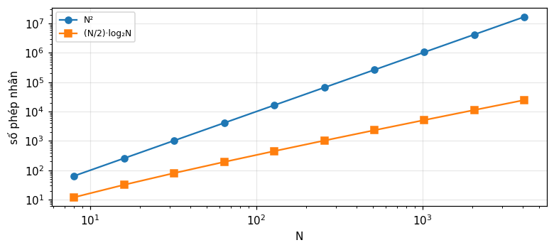
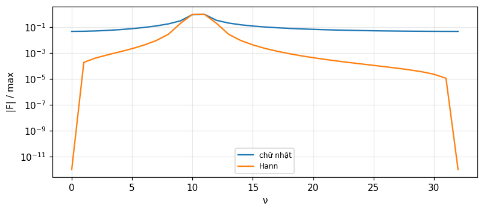
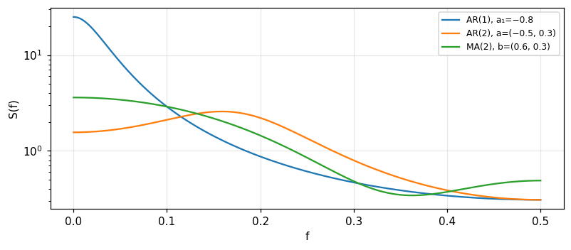

DFT, FFT và quá trình ngẫu nhiên rời rạc
Biến đổi Fourier rời rạc và các định lý, thuật toán FFT, sai số và rò phổ, phổ công suất (Bracewell), rồi quá trình rời rạc, ma trận tương quan, AR, MA, ARMA và xích Markov (Barkat).
Bài giảng (slide) Thực hành với Jupyter Notebook Quiz tự kiểm tra
Bài giảng (slide)
DFT, FFT và quá trình ngẫu nhiên rời rạc
- Định nghĩa DFT và nghịch đảo (với thừa số N^{-1} của Bracewell), đọc chỉ số tần số âm, và dùng các định lý dịch, chập, Parseval, đóng gói.
- Giải thích FFT bằng phân tích ma trận và chia chẵn lẻ, đếm phép nhân \tfrac N2\log_2N, và biết xử lý N không là lũy thừa của 2.
- Đánh giá sai số của DFT (chồng phổ, cắt cụt, rò phổ), dùng cửa sổ, và hiểu vì sao phổ công suất thô không cải thiện khi tăng N.
- Mô tả quá trình rời rạc bằng tương quan, ma trận Toeplitz, phổ (Wiener-Khinchin rời rạc) và hệ tuyến tính bất biến.
- Xây dựng và phân tích mô hình AR, MA, ARMA (Yule-Walker), và xích Markov rời rạc, liên tục (phân bố dừng, birth-death).
Dùng nút, chấm tròn hoặc phím ← → để chuyển slide.
Biến đổi Fourier rời rạc và các định lý
- Định nghĩa, nghịch đảo, chỉ số
- Đối xứng, dịch, chập, Parseval
- Đóng gói, kéo giãn, MATLAB
Vì sao cần lý thuyết rời rạc
Hàm cho bằng biến liên tục thì có trong sách và bảng cặp biến đổi, nhưng thực tế dữ liệu thường chỉ có tại các giá trị rời rạc, như phép đo điện thế tại các khoảng thời gian đều. Dù dữ liệu ra sao, khi biến đổi được tính bằng máy tính thì chỉ có các giá trị rời rạc. Ta hay nghĩ có một hàm liên tục nền bên dưới mà ta đang xấp xỉ, nhưng xét về thao tác thì nói về giá trị khác ngoài đầu vào và đầu ra là vô nghĩa (Bracewell, tr. 258). Thực ra tình huống hữu hạn nằm trong lý thuyết liên tục: hàm tuần hoàn có phổ là hàng xung; nếu phổ cũng tuần hoàn thì hàm là hàng xung; cả hai mô tả bằng hai tập hệ số hữu hạn. Nhưng ký hiệu rời rạc gọn và chuẩn hơn, nên ta bắt đầu lại.
Đưa dữ liệu về dạng f(\tau)
Ta cho biến rời rạc \tau nhận N giá trị nguyên liên tiếp không âm, sau khi đổi thang và gốc. Ví dụ nửa chu kỳ cosin v(t)=\cos2\pi t với -0.25<t<0.25 lấy mẫu mỗi 100 ms tại t=-150,-50,50,150 ms cho các giá trị 0.588, 0.951, 0.951, 0.588, với hai đầu bằng 0 (bảng 11.1 và 11.2). Nếu khoảng lấy mẫu là T và mẫu đầu tại t_0 thì f(\tau)=v(t_0+\tau T), \tau=0,\ldots,N-1. Lựa chọn điểm cuối là có ý thức: có thể thêm số 0 sau đó, và bảng không cho biết điện thế vẫn bằng 0 sau nửa chu kỳ (tr. 259 đến 260).
Định nghĩa DFT
F(\nu)=N^{-1}\sum_{\tau=0}^{N-1}f(\tau)e^{-i2\pi\nu\tau/N}. Như hệ số a_0 của chuỗi Fourier, F(0) bằng trung bình của các giá trị. Thừa số N^{-1} giữ đúng quy ước cũ; khi tính toán thực tế nên gộp nó vào các thừa số chuẩn hóa sau này. \nu/N tương tự tần số theo chu kỳ trên khoảng lấy mẫu; nếu khoảng lấy mẫu là T thì tần số tính bằng hertz là \nu/NT. Ví dụ với N=8 mẫu cách 1 s, thành phần tần số f nằm tại \nu=8f; và \nu=1 ứng với \tfrac18 Hz (tr. 260 đến 261). Với f=\{1,2,3,4\}: F(0) = 2.5, F(1) = -0.5 + 0.5i, và F(2) = -0.5.
Chứng minh nghịch đảo: đa giác đóng
Cần bổ đề \sum_{\nu=0}^{N-1}e^{i2\pi\nu(\tau-\tau')/N}=N khi \tau=\tau' và 0 nếu khác. Hình dung tổng như một đa giác đóng trong mặt phẳng phức, trừ khi \tau=\tau' thì nó thành đoạn thẳng gồm N vectơ đơn vị nối đầu nhau (nếu \tau-\tau' có thể bằng N,2N,\ldots thì tổng bằng N khi \tau=\tau' theo modulo N). Cũng có thể nhìn như hệ thức trực giao của các sin khác tần số. Thay F vào vế phải rồi đổi thứ tự tổng cho f(\tau') (tr. 261). Nghịch đảo không có thừa số N^{-1} và có dấu cộng trong mũ. Kiểm tra bằng số: biến đổi rồi nghịch đảo lại được f với độ lệch 7e-15.
Chỉ số tần số và tần số âm
Chỉ số \nu chạy 0 đến N-1 như \tau. Với bản ghi 1024 mẫu cách 1 s: chu kỳ cơ bản 1024 s, tần số cao nhất 0.5 Hz là họa âm thứ 512. Nhưng \nu/N đạt tới 1023/1024, nên không phải tương tự chặt của tần số: \nu=724 cho \nu/N = 0.707 Hz, mà các tần số trên 0.5 Hz không thể biểu diễn bằng mẫu ở 1 s; thực ra \nu=724 ứng với tần số âm -300/1024 = -0.293 Hz (Bracewell, tr. 262). Cách quen thuộc: cho phép mọi số nguyên và coi f(\tau), F(\nu) tuần hoàn chu kỳ N, f(\tau)=f(\tau+N), F(-\nu)=F(N-\nu), rồi lấy -\tfrac N2\le\nu<\tfrac N2.
Đếm số thực: vì sao 1024 mà chỉ 512 tần số
Nếu f(\tau) thực thì có 1024 số thực. F(\nu) có 1024 giá trị phức, cần 2048 số thực, trừ khi F(0) và F(N/2) không có phần ảo và nửa còn lại là liên hợp phức của nửa kia (vì f thực): còn 2+2\times511=1024 số thực, đủ để khôi phục. Kiểm tra với dữ liệu ngẫu nhiên: F(N-\nu)=\overline{F(\nu)} đúng với độ lệch 3e-14. Nếu f phức thì có 2048 số thực và F cần 2048 (tr. 262).
Bộ cặp biến đổi ngắn để kiểm tra
Một kho nhỏ các cặp DFT ngắn giúp kiểm tra và học thuật toán mới (tr. 265 đến 266). N=2: \{1\,0\}\supset\tfrac12\{1\,1\}, \{1\,{-1}\}\supset\tfrac12\{0\,2\}. N=4: \{1\,0\,0\,0\}\supset\tfrac14\{1\,1\,1\,1\}; \{0\,1\,0\,0\}\supset\tfrac14\{1\,{-i}\,{-1}\,i\}; \{1\,1\,1\,1\}\supset\{1\,0\,0\,0\}; \{1\,1\,0\,0\}\supset\tfrac14\{2\,1{-}i\,0\,1{+}i\}. Ta thấy một xung đơn vị có phổ có độ lớn phẳng, còn hằng số dồn vào \nu=0. Số đo bằng hai cách (định nghĩa và ma trận đơn vị căn): \{1,1,0,0\} cho F(1) có phần thực 0.25 và phần ảo -0.25, và \{0,1,0,0\} cho F(1) có phần ảo -0.25.
Tính chất đối ngược
Biến đổi liên tục áp dụng hai lần cho f(-t). Với DFT, vì thang N làm chỉ số \nu nguyên nên không hoàn toàn đối ngược: áp dụng hai lần liên tiếp không đổi dấu i cho N^{-1}f(-\tau); tức nếu f(\tau)\supset F(\nu) thì F(\nu)\supset N^{-1}f(-\tau) (Bracewell, tr. 266). Số đo với 8 số ngẫu nhiên: độ lệch giữa DFT của DFT và N^{-1}f(-\tau) là 2e-16. Thực hành: với hàm MATLAB (\mathrm{fft} không có N^{-1}), \mathrm{fft}(\mathrm{fft}(x))=N\,x(-\tau); với x=\{1,1,1,1,0,0,0,0\} ta được 8\{1,0,0,0,0,1,1,1\}, hệ số 8 (tr. 274).
Chẵn, lẻ và các quy tắc đối xứng
Chuỗi chẵn nếu f(-\tau)=f(\tau), lẻ nếu f(-\tau)=-f(\tau), với f(-\tau)=f(N-\tau). Ví dụ 16 phần tử chẵn \{5432\,1000\,0000\,1234\} và lẻ \{0876\,5432\,0{-2}{-3}{-4}\,{-5}{-6}{-7}{-8}\}. Quy tắc giống biến đổi liên tục: thực \supset Hermite; thực và chẵn \supset thực và chẵn; thực và lẻ \supset ảo và lẻ; ảo và chẵn \supset ảo và chẵn; ảo và lẻ \supset thực và lẻ (tr. 266 đến 267). Số đo: phần ảo lớn nhất của DFT chuỗi chẵn là 4e-15, phần thực lớn nhất của DFT chuỗi lẻ là 2e-14. Áp dụng thực tế: tín hiệu \{1,1,1,0,0,0,1,1\} đối xứng quanh \tau=0 có DFT thực với F tại 0 bằng 5 (tổng, MATLAB).
Cộng, liên hợp, đảo, dịch
f_1+f_2\supset F_1+F_2. Liên hợp: f^*(\tau)\supset F^*(-\nu). Đảo: f(-\tau)\supset F(-\nu). Dịch: f(\tau-T)\supset e^{-i2\pi T\nu/N}F(\nu), và dịch tần số e^{i2\pi\nu_0\tau/N}f(\tau)\supset F(\nu-\nu_0) (tr. 268 đến 269). Ví dụ dịch: \{0,1,0,0\} là \{1,0,0,0\} dịch một bước, DFT nhân với (-i)^\nu: \tfrac14\{1,-i,-1,i\}. Số đo: độ lệch định lý dịch với T=3, N=16 ngẫu nhiên: 8e-16; độ lớn |F| không đổi sau dịch nên phổ biên độ độc lập với chọn gốc, còn pha thay đổi tuyến tính.
Chập vòng và định lý chập
Chập hai chuỗi m và n phần tử cho m+n-1 phần tử; với hai chuỗi N phần tử nó không nằm gọn trong N phần tử. Chập vòng h(\tau)=\sum f(\tau')g[\tau-\tau'+NH(\tau'-\tau)] (hiểu g theo nghĩa tuần hoàn thì bỏ số hạng NH). Định lý: f_1(\tau)*f_2(\tau)\supset N F_1(\nu)F_2(\nu), và định lý tích f_1f_2\supset\sum_{\nu'}F_1(\nu')F_2(\nu-\nu') (tr. 264 đến 269). Ví dụ: \{1100\}*\{1100\}=\{1210\} có DFT \tfrac14\{4,-2i,0,2i\}, khớp N F_1^2, F(1) có phần ảo -0.5. Bài tập 2 của chương: \{1200\}*\{2300\}=\{2\,7\,6\,0\}; \{1111\}*\{0110\}=\{2222\}; \{1001\}*\{0100\}=\{1100\}.
Tương quan, tổng, giá trị đầu, Parseval
Tương quan chéo \sum f_1(\tau')f_2(\tau'+\tau)\supset NF_1(\nu)F_2(-\nu); tự tương quan \supset N|F(\nu)|^2. Tổng chuỗi \sum f(\tau)=NF(0), và giá trị đầu f(0)=\sum F(\nu): trung bình của chuỗi bằng giá trị đầu của DFT, nhưng giá trị đầu của chuỗi bằng tổng DFT. Ví dụ \{1050\}\supset\{1.5,-1,1.5,-1\}: tổng 6 = 4\times 1.5, f(0)=1 = 1.5-1+1.5-1. Parseval-Rayleigh: \sum|f|^2=N\sum|F|^2; với \{1100\}: 2 và 4\times0.5 = 2 (tr. 270 đến 271).
Định lý đóng gói và kéo giãn
Đóng gói \mathrm{Pack}_K\{f\} thêm số 0 ở cuối để có KN phần tử: G(\nu)=\tfrac1KF(\nu/K) tại \nu=0,K,2K,\ldots; các giá trị xen giữa có thể nội suy bằng sinc (Bài 7 và 8). Ví dụ \mathrm{Pack}_2\{1,2,3,4\}=\{1,2,3,4,0,0,0,0\} cho G(0) = 1.25 (một nửa F(0)). Kéo giãn \mathrm{Stretch}_K\{1234\}=\{10203040\}: G(\nu)=\tfrac1KF(\nu) lặp K lần, chứ không nén thang tần số; số đo |G(1)| = 0.3536 (một nửa |F(1)|). Tương tự lấy mẫu thưa của liên tục sao chép phổ (tr. 271 đến 272).
Các quy ước MATLAB
Hàm \mathrm{fft} của MATLAB không chia N: X(k)=\sum_{n=1}^Nx(n)e^{-2\pi i(k-1)(n-1)/N}, nên giá trị đầu là tổng chứ không phải trung bình, và chỉ số bắt đầu từ 1 (k=1 là dc). Với \{1,1,1,1,0,0,0,0\} kết quả là \{4,\ 1-2.4142i,\ 0,\ 1-0.4142i,\ 0,\ 1+0.4142i,\ 0,\ 1+2.4142i\} (tr. 272 đến 274): phần ảo 2.4142 và 0.4142, tổng 4. Nghịch đảo \mathrm{ifft} mới chia 1/N. Trong tính toán thực tế nên bỏ hẳn N^{-1} ở cả hai chiều và chuẩn hóa một lần ở cuối. Bracewell dặn phải đọc tài liệu vì một số phần mềm cài biến thể của DFT chứ không phải DFT (tr. 278 đến 279).
Tự kiểm tra phần 1
- F(0) của \{1,2,3,4\} bằng bao nhiêu và vì sao?
- Chỉ số \nu=724 với N=1024 ứng với tần số nào?
- Vì sao thêm số 0 ở cuối làm G(\nu) nhỏ đi một nửa khi K=2?
Gợi ý: trung bình 2.5; -300/1024 Hz; vì thừa số N^{-1} nay là (KN)^{-1}.
Biến đổi Fourier nhanh
- Phân tích ma trận và chia chẵn lẻ
- Đếm phép nhân
- Trường hợp N bất kỳ, thêm số 0
Lịch sử và lý do
Năm 1965 phương pháp tính DFT nhanh bỗng được biết rộng rãi (Cooley và Tukey, 1965) và làm thay đổi nhiều lĩnh vực mà tính toán nặng là trở ngại. Nguồn lịch sử tốt: IEEE Trans. Audio Electroacoustics, AU-2, 6/1967, và Bergland (1969). Tên Discrete Fourier Transform do Good (1951) đặt (Bracewell, tr. 275). Có nhiều cách hiểu FFT: phân tích ma trận biến đổi, hoặc chia dãy. Nếu DFT trực tiếp tốn N^2 phép nhân thì với N=1024 là 1048576 phép nhân phức, còn FFT dùng khoảng 5120 (mục sau).
Phân tích ma trận
Với N=8, F=W f trong đó W_{\nu\tau}=w^{\nu\tau} với w=e^{-i2\pi/N}, một căn bậc N của đơn vị có modul 1 và pha -1/N vòng. Ma trận W phân tích thành ba ma trận thưa (mỗi hàng chỉ có hai phần tử khác 0) nhân với một ma trận hoán vị (sắp xếp lại), nên mỗi thừa số cần 2N phép nhân thay cho N^2; số thừa số M=\log_2N (không tính thừa số hoán vị), tổng 2N\log_2N (Bracewell, tr. 275 đến 276). Nhiều phép nhân là tầm thường, nên cần đếm kỹ; nhưng lợi về bậc là N/\log_2N. Với N=1024 theo ước lượng này là 2N\log_2N = 20480, tức nhanh khoảng 51.2 lần.
Chia chẵn và lẻ
Chia dãy N phần tử thành hai dãy N/2 phần tử: phần tử chỉ số chẵn và chỉ số lẻ. Ví dụ \{8,7,6,5,4,3,2,1\}=\{8,0,6,0,4,0,2,0\}+\{0,7,0,5,0,3,0,1\}. Theo định lý kéo giãn, DFT của phần chẵn là \{ABCD\,ABCD\}, và theo định lý dịch, DFT của phần lẻ là \{P\,WQ\,W^2R\,W^3S\,W^4P\ldots\} với W=e^{-i2\pi/8}; cộng hai vế cho DFT dài (tr. 276 đến 277). Vậy F(\nu)=\tfrac12[E(\nu)+W^\nu O(\nu)] với E,O là DFT của hai dãy ngắn (theo \nu mod 4). Số đo với \{8,\ldots,1\}: F(0) = 4.5 (trung bình), và công thức chia chẵn lẻ khớp với DFT trực tiếp, độ lệch 8e-16.
Đảo bit và sơ đồ dòng
Áp dụng đệ quy tới cùng, sơ đồ dòng (hình 11.6 đến 11.8) có \log_2N cột bộ cộng. Bước đầu là sắp xếp lại dãy, tương ứng nhân với ma trận đầu, gọi lỏng là đảo bit: \{8,7,6,5,4,3,2,1\}\to\{8,4,6,2,7,3,5,1\}, tức thứ tự chỉ số 0,4,2,6,1,5,3,7 (chỉ số nhị phân đọc ngược). Sau đó ba giai đoạn cộng có nhân với W^k. Trong hình 11.8 có 48 phép nhân, nhưng 32 là nhân với 1 và 7 là nhân với W^4=-1 (đổi dấu); W^2, W^6 cũng đơn giản (tr. 277 đến 278). Số đo: phần tử thứ hai của thứ tự đảo bit là 4 và phần tử thứ ba là 2.
Đếm phép nhân bằng chương trình
Cài đặt FFT chia đôi đệ quy có bộ đếm cho phép nhân với hệ số W^k. Với N=8 có tổng 12 phép nhân (bằng \tfrac N2\log_2N), trong đó 7 là nhân với 1, 3 là nhân với \pm i hay -1, và chỉ 2 là nhân thực sự với W^1 và W^3. Với N=1024 tổng bằng 5120, so với N^2 = 1048576: tỉ lệ 204.8. Bracewell nhấn mạnh phải đếm chính xác các phép nhân tầm thường nên các chương trình khác nhau có số đếm khác nhau, và thời gian chạy mới là chuẩn cuối cùng (tr. 278, 282).

N không là lũy thừa của 2
Với 365 giá trị, 365=5\times73 nên lý thuyết vẫn lợi được, nhưng có chương trình cơ số 3, 5, 7, 11, 13 (Winograd; Nussbaumer 1982), không có cơ số 73. Cách đơn giản: kéo dài dãy tới 512 phần tử bằng số 0. Khi đó các giá trị không ứng với họa âm của một chu kỳ mỗi năm. Nếu cần đúng 365 giá trị phức thì \mathrm{fft} của MATLAB vẫn cho; số đo: FFT trên N=365 khớp DFT định nghĩa trực tiếp với độ lệch 6e-12 (Bracewell, tr. 283 đến 284). Các chương trình thực dùng cơ số hỗn hợp nên thực tế nhanh với mọi N có ước nhỏ.
Thêm số 0: trước, sau hay giữa?
Với 60 phần tử cần độn thành 64: thêm 4 số 0 ở cuối, đầu, hoặc 2+2 hai đầu. Từ hình 11.4 và định lý dịch, |F(\nu)| không đổi, chỉ pha khác do dịch gốc; nếu pha quan trọng thì dùng hệ số hiệu chỉnh của định lý dịch (tr. 279). Số đo: chênh lệch lớn nhất của modul giữa ba cách là 5e-15, và định lý dịch khớp chính xác. Nhưng nếu thêm 68 số 0 để dùng chương trình N=128 thì câu trả lời có thể là có: dãy thêm số 0 có bước nhảy ở hai đầu.
Kéo dài chu kỳ và các đảo phổ
Hàm rời rạc là v(t)\mathrm{III}(t) nhưng không tuần hoàn; tuần hoàn là p(t)=[v(t)\mathrm{III}(t)]*N^{-1}\mathrm{III}(t/N), tương ứng chính xác với f(\tau). Biến đổi P(f)=[S(f)*\mathrm{III}(f)]\mathrm{III}(Nf): DFT chính là mẫu của cùng biểu thức S*\mathrm{III} tại các khoảng 1/N. Nếu tái tạo với chu kỳ 2N, cùng biểu thức được lấy mẫu dày gấp đôi. Vì sao khác? Vì S(f) thường dao động khi f(\tau) có bước nhảy lớn ở đầu và cuối chuỗi; do tính tuần hoàn, giá trị đầu lớn không là bước nhảy nếu giá trị cuối gần bằng nó (tr. 279 đến 280). Số đo: với \cos(2\pi\cdot5\tau/64) chỉ có hai vạch ở 64 điểm, nhưng thêm 64 số 0 làm 0.095 năng lượng rò ra ngoài lân cận vạch.
Tự kiểm tra phần 2
- Số phép nhân của FFT cơ số 2 bằng bao nhiêu với N=8?
- Thứ tự đảo bit của 8 phần tử là gì?
- Vì sao thêm số 0 ở cuối có thể làm phổ trở nên gồ ghề?
Gợi ý: \tfrac N2\log_2N=12; 0,4,2,6,1,5,3,7; vì tạo bước nhảy giữa dữ liệu và số 0.
DFT có đúng không: sai số, cửa sổ, phổ công suất
- Chồng phổ, cắt cụt, rò phổ
- Chập bằng FFT và DFT hai chiều
- Phổ công suất
Câu hỏi: DFT có xấp xỉ đúng FT không
Lý thuyết DFT chính xác và nhất quán, nhưng DFT chỉ có thể là xấp xỉ vì chỉ cho hữu hạn tần số rời rạc; và ngay các giá trị rời rạc đó cũng có thể sai. Thảo luận dựa trên định lý lấy mẫu và chồng phổ. Nếu mẫu đầu không đủ dày để biểu diễn các thành phần tần số cao có trong hàm nền, thì cả giá trị DFT và đường cong trơn qua chúng đều bị chồng phổ làm sai. Nếu biết hàm nền thì sai số tính được; còn nếu dữ liệu đo là tất cả, tránh sai số nhờ kinh nghiệm hoặc thực nghiệm, ví dụ chạy lại với gấp đôi số mẫu trong cùng thời gian để xác nhận có tần số cao hơn hay không (Bracewell, tr. 280 đến 281).
Chồng phổ trong DFT
Một sóng cos có tần số 0.75 chu kỳ trên mỗi mẫu, tức trên tần số Nyquist 0.5, hiện thành tần số 1-0.75=0.25 ở DFT 64 điểm: đỉnh nằm tại \nu = 16 thay vì \nu=48; phổ không phân biệt được hai tần số. Nói chung tần số f và f+k (chu kỳ trên mẫu) cho cùng dãy mẫu, và đó là hệ quả sao chép phổ với chu kỳ 1 của \mathrm{III} (module 13). Phòng ngừa: lọc thông thấp trước khi lấy mẫu, hoặc lấy mẫu dày hơn.
Cắt cụt: làm nhẵn và rò phổ
Cắt cụt hàm cho FT sai (kết quả là chập của FT đúng với một hàm sinc), điều này không riêng DFT. Nhưng sai số ở DFT khác: chập với các mẫu của sinc tương ứng với bề rộng hàm chữ nhật, tương tự Q(f) trong hình 11.1, nên ngoài làm nhẵn (mất chi tiết mịn) còn có rò phổ: các đảo trái và phải của Q(f) rò vào đảo trung tâm. Rò phổ có thể giảm bằng cửa sổ thon thay cho hàm chữ nhật, đổi lấy tăng sai số làm nhẵn; rò phổ làm sai các tần số cao (gần \nu\approx N/2) (tr. 281). Số đo với 64 điểm, chu kỳ đúng 10: tỉ lệ năng lượng ngoài \pm2 chỉ số lân cận vạch là 1e-16; với 10.5 chu kỳ là 0.0852; với cửa sổ Hann là 0.0005.

Cửa sổ cosin: chập với ba hệ số
Bài 13: nhân dãy với chuông cosin w(\tau)=0.5-0.5\cos(2\pi\tau/N) (tăng từ 0 ở \tau=0 và rơi về 0 ở cuối) làm DFT bị chập rời rạc với dãy N phần tử \{\tfrac12,-\tfrac14,0,\ldots,0,-\tfrac14\}: thay F(\nu) bằng -\tfrac14F(\nu-1)+\tfrac12F(\nu)-\tfrac14F(\nu+1) (tr. 289). Số đo: hệ số trung tâm 0.5, hệ số kề -0.25 (tổng bằng w(0)=0), độ lệch giữa DFT của dãy đã nhân và công thức ba hệ số là 2e-15. Câu hỏi của sách: dãy \{-\tfrac14,\tfrac12,-\tfrac14\} có làm sắc không? Tổng hệ số bằng 0 nghĩa là loại bỏ thành phần liên tục của F, nhưng tác dụng lên vạch phổ là mở rộng nó sang hai bên để dập tắt các thùy xa (tr. 289).
Bài 10: DFT so với FT của e^{-t/4}H(t)
Cho f(\tau)=e^{-\tau/4} với 1\le\tau\le31 và f(0)=0.5; so DFT với biến đổi liên tục V(f)=1/(\tfrac14+i2\pi f) của e^{-t/4}H(t) (tr. 290). Tại \nu=0: N F(0)=\sum f bằng 4.0193 so với V(0)=4, lệch tương đối 0.0048; tại \nu=8 (f=0.25) lệch tương đối 0.2199. Nguồn sai: giá trị đầu 0.5 là quy tắc hình thang (bằng nửa bước nhảy) làm tổng Poisson của phổ khớp; sai số còn lại là chồng phổ vì V(f) không cắt tuyệt đối, cộng với cắt cụt ở \tau=31. Kiểm tra bằng tổng cấp số nhân đóng: \tfrac{1-z^{32}}{1-z}-\tfrac12 với z=e^{-1/4-i2\pi\nu/N} trùng N F(\nu) với độ lệch 1e-15.
Chập, tương quan và tự tương quan bằng FFT
Chập tổng quát, gồm tương quan chéo và tự tương quan, nay tốt nhất được thực hiện bằng hai DFT, nhân, và nghịch đảo. Nhưng hai đầu vào N phần tử cho đầu ra 2N-1 phần tử nên nhân từng số hạng rồi biến đổi ngược chỉ cho nửa chiều dài đúng: kết quả cuộn vòng và chồng lên chính nó (hình 11.4, 11.10, 11.11). Ví dụ chữ nhật \{1111\}: tự tương quan vòng cho \{4,4,4,4\} (giá trị 4), chưa phải tam giác. Độn thêm số 0 tới gấp đôi: \{4,3,2,1,0,1,2,3\}, giá trị lag 1 là 3, và độ dài đúng 4+4-1 = 7 phần tử (tr. 282).
DFT hai chiều
F(\mu,\nu)=(MN)^{-1}\sum\sum f(\sigma,\tau)e^{-i2\pi(\mu\sigma/M+\nu\tau/N)}: tách được, tức DFT một chiều theo hàng rồi theo cột. Các số nguyên \sigma,\tau bắt đầu từ 0 nên một vật đối xứng trong mặt phẳng (x,y) bị chia cắt kỳ lạ trong mặt phẳng (\sigma,\tau); guard zone bằng số 0 quanh vật cũng không phải là viền trên ma trận. Nếu gốc không trùng, biến đổi vật đối xứng sẽ phức, nhưng modul đúng, pha tăng tuyến tính theo định lý dịch (Bracewell, tr. 284 đến 285). Số đo: phần ảo lớn nhất của DFT hai chiều của vật đối xứng quanh gốc vòng là 1e-16; khi dịch vật đi (2,3) thì phần ảo lớn nhất là 13.66 nhưng modul giữ nguyên; và DFT tách được khớp phép tính hai tổng trực tiếp.
Phổ công suất: pha mất nghĩa
Khi pha không quan trọng hay không thể biết thì dùng |F(\nu)|^2, gọi là phổ công suất, dù nó có thể không phải công suất. Phổ công suất của một hàm thời gian liên tục đo bằng W/Hz chứ không bao giờ bằng W trơn. Với quá trình ngẫu nhiên, phổ công suất thường định nghĩa là biến đổi của hàm tự hiệp phương sai (đã trừ mức DC); với dữ liệu thực ta chỉ có một chuỗi dữ liệu hữu hạn (tr. 285 đến 286). Ví dụ độ cao mặt biển đo mỗi 10 s: các |F(\nu)|^2 cho biết băng nào chứa công suất sóng, nhưng có độ chính xác và độ phân giải hữu hạn vì N hữu hạn.
Nghịch lý: tăng N không cải thiện độ chính xác
Trực giác: tăng N lên bốn lần sẽ làm giảm một nửa dao động bất thường giữa các giá trị |F(\nu)|^2. Nhưng thực tế độ chính xác không cải thiện: định nghĩa phổ công suất là giới hạn N\to\infty không dùng được cho dữ liệu ngẫu nhiên. Số đo với nhiễu trắng Gauss: tỉ số độ lệch chuẩn trên trung bình của |F|^2 là 1 khi N=256 và 1 khi N=4096. Cách giải thích đúng: trong một băng tần chọn trước, công suất được đo chính xác hơn khi N tăng vì có nhiều giá trị hơn để cộng: độ lệch tương đối của công suất băng [0.1,0.2] là 0.19 với N=256 và 0.05 với N=4096 (Bracewell, tr. 286 đến 287).
Làm nhẵn phổ: độ chính xác đổi lấy độ phân giải
Các giá trị |F(\nu)|^2 dao động quanh xu hướng chung; lấy trung bình vài giá trị kề (chập trong miền phổ công suất) giảm sai số. Trung bình M=16 giá trị kề đưa tỉ số độ lệch chuẩn trên trung bình từ 1 xuống 0.25 (\approx1/\sqrt{M}=0.25). Nhưng lấy trung bình quá nhiều làm mất độ phân giải tần số: một đặc điểm phổ hẹp bị đánh giá thấp cường độ, rộng hơn và có thùy hai bên. Lựa chọn tối ưu tùy mục đích: đo cường độ tuyệt đối, tách các vạch sát, hay tránh phát hiện nhầm; không có lời khuyên duy nhất, nên có nhiều đơn thuốc trong tài liệu. Blackman và Tukey (1958) đặt tên lag window cho hệ số thon nhân với tự tương quan (tr. 287 đến 288).
FFT là một nghệ thuật
- Ứng dụng: nhiễu xạ tia X, giao thoa vô tuyến (chỉ nhanh hơn việc đã làm), và lọc thông thấp ảnh hai chiều: DFT, nhân với hàm truyền, nghịch đảo; nhanh hơn chập trực tiếp cỡ N^2 khi N lớn.
- Cửa sổ thon áp trực tiếp lên dữ liệu không giống lag window: kết quả không là chập của phổ thô với dãy trọng số, nên không đúng là công suất trong băng.
- Do tính đa dạng, dùng FFT là một nghệ thuật; thử với dữ liệu của mình để lấy kinh nghiệm là cách dùng có giá trị của phần mềm thương mại (Bracewell, tr. 288).
Tự kiểm tra phần 3
- Vì sao phổ công suất thô của nhiễu trắng có độ lệch tương đối 1 với mọi N?
- Tự tương quan bằng FFT cần độn số 0 thế nào?
- Cửa sổ Hann đổi gì lấy gì?
Gợi ý: mỗi giá trị là bình phương hai số Gauss độc lập, phân bố mũ; gấp đôi chiều dài; giảm rò phổ, tăng làm nhẵn.
Quá trình ngẫu nhiên rời rạc
- Định nghĩa và ma trận tương quan
- Trị riêng và định lý phổ
- Phổ và hệ tuyến tính
Quá trình rời rạc và mô hình chuỗi thời gian
Một quá trình ngẫu nhiên rời rạc ánh xạ không gian mẫu vào không gian hàm rời rạc: tập các dãy thực hay phức (thể hiện) ký hiệu X(n); Barkat giữ ký hiệu này để thống nhất với X(t) của quá trình liên tục và chuẩn hóa thời gian theo chu kỳ lấy mẫu. Với n cố định X(n) là biến ngẫu nhiên. Chuỗi thời gian X(n),X(n-1),\ldots,X(n-M+1) gồm quan sát hiện tại và M-1 quan sát quá khứ. Mô hình dữ liệu tổng quát là phương trình sai phân tuyến tính X(n)=-\sum_{k=1}^pa(k)X(n-k)+\sum_{k=0}^qb(k)U(n-k) (4.1) với U là chuỗi kích thích. Khi đó phổ là hàm của tham số mô hình, cách tiếp cận tham số (Barkat, mục 4.1, tr. 223 đến 224).
Trung bình, tự tương quan, hiệp phương sai
m_x(n)=E[X(n)], r_{xx}(n_1,n_2)=E[X(n_1)X^*(n_2)], c_{xx}(n_1,n_2)=r_{xx}-m_x(n_1)m_x^*(n_2) (4.105 đến 4.107). Dừng theo nghĩa rộng: trung bình hằng và r_{xx}(n,n+k)=r_{xx}(k)=c_{xx}(k)+m_x^2 chỉ phụ thuộc lag k. Hai quá trình đồng dừng nếu mỗi quá trình dừng và tương quan chéo r_{xy}(k)=c_{xy}(k)+m_xm_y^*. Tính chất: r_{xx}(0)\ge|r_{xx}(k)| với r_{xx}(0) thực dương, r_{xx}(-k)=r_{xx}^*(k), r_{xx}(0)r_{yy}(0)\ge|r_{xy}(k)|^2, r_{xy}(-k)=r_{yx}^*(k) (4.112 đến 4.115) (tr. 245 đến 246). Số đo với r(k)=0.8^{|k|}: r(0)\ge r(k) và các giá trị r(1) = 0.8, r(3) = 0.512.
Ma trận tương quan Toeplitz
Với vectơ cột X(n)=[X(n),X(n-1),\ldots,X(n-M+1)]^T của quá trình dừng, ma trận tương quan R=E[X(n)X^H(n)] là Toeplitz Hermite với r(0) trên đường chéo và r(\pm k) trên các đường chéo phụ (4.116 đến 4.118), và bán xác định dương: E|\sum a^*(k)X(k)|^2=\sum\sum a^*(l)a(k)r(l-k)\ge0 (4.119). Ví dụ M=4 với r(k)=0.8^{|k|}: R có r(0)=1, r(1)=0.8, r(2)=0.64, r(3)=0.512; các trị riêng của nó là 3.1032, 0.5593, 0.2088, 0.1287 đều dương, và tổng bằng vết 4 (tr. 246 đến 247). Kiểm tra bằng hai cách: phân tích trị riêng và nghiệm của đa thức đặc trưng.
Sáu tính chất của trị riêng, và một lỗi trong sách
Barkat liệt kê (tr. 247 đến 249): (1) các trị riêng khác nhau là thực; (2) các vectơ riêng ứng với trị riêng khác nhau độc lập tuyến tính; (3) chúng trực giao v_i^Hv_j=0; (4) trị riêng của R^k là \lambda_i^k, nên của R^{-1} là 1/\lambda_i; (5) R=V\Lambda V^H=\sum\lambda_iv_iv_i^H (định lý phổ) và R^{-1}=\sum\lambda_i^{-1}v_iv_i^H; (6) \mathrm{tr}(R)=\sum\lambda_i. Lỗi: tính chất (1) trong sách viết các trị riêng là \"thực và âm\", mâu thuẫn với chính bán xác định dương ngay trên đó (trị riêng \ge0); đúng phải là thực và không âm. Ví dụ ở đây các trị riêng đều dương. Số đo: V^HV=I lệch 4e-16; R=V\Lambda V^H lệch 1e-15; trị riêng của R^{-1} là nghịch đảo, lớn nhất 7.7675.
Phổ công suất rời rạc và Wiener-Khinchin
S_{xx}(\omega)=\sum_{k=-\infty}^\infty r_{xx}(k)e^{-j\omega k}, |\omega|<\pi (4.131) tuần hoàn chu kỳ 2\pi (4.132), vì e^{-j\omega2\pi kl}=1. Tương tự chuỗi Fourier với -\omega giống t: r_{xx}(k)=\tfrac1{2\pi}\int_{-\pi}^{\pi}S_{xx}(\omega)e^{j\omega k}d\omega (Barkat viết dấu - trong tích phân này). Hai công thức là quan hệ Wiener-Khinchin rời rạc, và công suất trung bình r_{xx}(0)=E[|X(n)|^2]=\tfrac1{2\pi}\int S_{xx}d\omega (4.134 đến 4.135). S_{xx} thực vì r_{xx}(-k)=r_{xx}^*(k). Với r(k)=\rho^{|k|}, S(\omega)=\dfrac{1-\rho^2}{1-2\rho\cos\omega+\rho^2}; với \rho=0.8: S(0) = 9, S(\pi) = 0.1111; tích phân cho r(0)=1 và r(3) = 0.512 (tr. 249 đến 250).
Hệ tuyến tính bất biến
Với đầu vào dừng X(n) và đáp ứng xung h(n): r_{xy}(k)=h(k)*r_{xx}(k), r_{yx}(k)=h^*(-k)*r_{xx}(k), r_{yy}(k)=h(k)*h^*(-k)*r_{xx}(k) (4.138 đến 4.140). Lấy biến đổi Z: S_{xy}(Z)=H(Z)S_{xx}(Z), S_{yx}(Z)=H^*(1/Z^*)S_{xx}(Z), S_{yy}(Z)=H(Z)H^*(1/Z^*)S_{xx}(Z), với H(Z)=\sum h(n)Z^{-n}. Trên vòng đơn vị, với h thực, S_{yy}(\omega)=|H(e^{j\omega})|^2S_{xx}(\omega) (4.147) (tr. 250 đến 252). Đây là đối tác rời rạc của định lý Wiener-Khinchin qua hệ tuyến tính (module 12) và của chập hai lần trong tương quan.
Ví dụ 4.3: nhiễu trắng qua bộ lọc
Nhiễu trắng: E[X(n_1)X^*(n_2)]=\sigma_n^2\delta(n_2-n_1), r_{xx}(k)=\sigma_n^2\delta(k), phổ phẳng S_{xx}(\omega)=\sigma_n^2; đầu ra S_{yy}(\omega)=\sigma_n^2|H(e^{j\omega})|^2 (4.148 đến 4.156). Với h=\{1,0.5,0.25\} và \sigma_n^2=1: r_{yy}(k)=\sum h(l)h(l+k) cho r_{yy}(0)=1+0.25+0.0625 = 1.3125, r_{yy}(1)=0.5+0.125 = 0.625, r_{yy}(2)=0.25 = 0.25, và r_{yy}(k)=0 với k\ge3. Kiểm tra ba cách: công thức, tích phân \tfrac1{2\pi}\int|H|^2\cos k\omega (khớp 0.625), và mô phỏng 4\times10^5 mẫu (khớp 0.62 ở lag 1).
Nối với module 13: ma trận tương quan và Karhunen-Loève
Ma trận R là bản rời rạc của nhân tự hiệp phương sai K_{xx}(t,u) ở module 13; trị riêng và vectơ riêng của R là trị riêng và hàm riêng của khai triển Karhunen-Loève rời rạc: X=\sum(v_k^HX)v_k với các hệ số v_k^HX không tương quan, phương sai \lambda_k. Định lý phổ (4.128) là Mercer rời rạc: R=\sum\lambda_kv_kv_k^H. Với r(k)=0.8^{|k|}: các phương sai thành phần là 3.1032, 0.5593, 0.2088, 0.1287, và chúng cộng lại bằng năng lượng tổng 4. Các trị riêng của ma trận Toeplitz nằm giữa giá trị nhỏ nhất 0.1111 và lớn nhất 9 của phổ (nhận xét của chúng tôi, không nằm trong sách).
Tự kiểm tra phần 4
- Vì sao R là Toeplitz Hermite và bán xác định dương?
- Phổ của nhiễu trắng có phương sai \sigma_n^2 là gì?
- Tự tương quan của đầu ra bộ lọc FIR 3 hệ số có độ dài bao nhiêu?
Gợi ý: vì dừng và E|\sum a^*X|^2\ge0; hằng \sigma_n^2; bằng 0 với |k|\ge3, tức 5 giá trị khác 0.
AR, MA, ARMA và xích Markov
- AR: tự tương quan, phổ, Yule-Walker
- MA và ARMA
- Xích Markov rời rạc và liên tục
Mô hình AR
X(n)=-\sum_{k=1}^pa_kX(n-k)+e(n)=\sum\omega_kX(n-k)+e(n) (4.157), với e(n) i.i.d. Gauss trung bình 0 phương sai \sigma_n^2, p là bậc, \omega_k=-a_k. \"Tự hồi quy\" vì X(n) là tổ hợp tuyến tính của các giá trị quá khứ và sai số. Biến đổi Z: bộ lọc toàn không 1+\sum a_kZ^{-k} biến X thành e; và khi kích bằng nhiễu trắng e(n), X ra qua bộ lọc toàn cực H(Z)=1/(1+\sum a_kZ^{-k}) (4.159 đến 4.162). Trung bình bằng 0 nếu \sum a_k\neq1, do m_x=-(\sum a_k)m_x (Barkat, mục 4.4.1, tr. 254 đến 255).
AR(1): phương sai và tự tương quan
X(n)=-a_1X(n-1)+e(n). Phương sai \sigma_x^2=a_1^2\sigma_x^2+\sigma_n^2, nên \sigma_x^2=\sigma_n^2/(1-a_1^2), hữu hạn dương khi -1<a_1<1 (4.168 đến 4.169). Tự tương quan r_{xx}(k)=-a_1r_{xx}(k-1) cho r_{xx}(k)=(-a_1)^k\sigma_x^2=\omega_1^k\sigma_x^2, hệ số tương quan \rho_k=(-a_1)^k (4.170 đến 4.172). Với a_1=-0.8, \sigma_n^2=1: \sigma_x^2 = 2.7778, r_{xx}(3) = 1.4222; gần biên a_1=-0.99 phương sai lên 50.25. Mô phỏng 4\times10^5 mẫu khớp: phương sai 2.8.
Phổ của AR(1)
|H(e^{j\omega})|^2=1/(1+2a_1\cos\omega+a_1^2), nên S_{xx}(f)=\dfrac{\sigma_n^2}{1+2a_1\cos2\pi f+a_1^2}=\dfrac{\sigma_x^2(1-a_1^2)}{1+2a_1\cos2\pi f+a_1^2}, |f|<\tfrac12 (4.173 đến 4.175). Với a_1=-0.8, \sigma_n^2=1: S(0)=\sigma_n^2/(1+a_1)^2 = 25 (phổ đặt nhiều công suất ở tần số thấp) và S(\tfrac12)=\sigma_n^2/(1-a_1)^2 = 0.3086. Kiểm tra hai cách: công thức và tổng \sum r(k) cho S(0); và \int S\,df=\sigma_x^2.
AR(2): các công thức
X(n)=-a_1X(n-1)-a_2X(n-2)+e(n). Từ r(k)=-a_1r(k-1)-a_2r(k-2) và r(1)=r(-1): \rho_1=-a_1/(1+a_2), \rho_2=a_1^2/(1+a_2)-a_2 (4.185, 4.187), và \sigma_x^2=\dfrac{\sigma_n^2}{1+a_1\rho_1+a_2\rho_2}=\dfrac{\sigma_n^2(1+a_2)}{(1-a_2)(1+a_1+a_2)(1-a_1+a_2)} (4.180, 4.188). Với a_1=-0.5, a_2=0.3, \sigma_n^2=1: \rho_1 = 0.3846, \rho_2 = -0.1077, \sigma_x^2 = 1.2897. Hai công thức cho phương sai trùng nhau; phổ S_{xx}(f)=\sigma_n^2/|1+a_1e^{-j2\pi f}+a_2e^{-j4\pi f}|^2 tích phân cho cùng giá trị (tr. 258 đến 260).
Tam giác ổn định
Phương sai AR(2) hữu hạn dương khi -1<a_2<1, -(a_1+a_2)<1 và a_1-a_2<1 (4.190): một tam giác trong mặt phẳng (a_1,a_2). Nó trùng điều kiện cực của H(Z) nằm trong vòng đơn vị: cực là nghiệm z^2+a_1z+a_2=0. Với (a_1,a_2)=(-0.5,0.3) các cực phức có modul \sqrt{a_2} = 0.5477, nhỏ hơn 1 nên ổn định; với (-1.8,0.5), -(a_1+a_2)=1.3>1 vi phạm, và cực lớn nhất 1.4568 vượt 1. Kiểm tra trên 20000 điểm ngẫu nhiên: tam giác và phép thử cực khác nhau tại 0 điểm.
AR(p) và phương trình Yule-Walker
Nhân X(n)=-\sum a_kX(n-k)+e(n) với X^*(n-l) và lấy kỳ vọng: r(l)=-\sum a_kr(l-k) với l>0, và r(0)=-\sum a_kr(k)+\sigma_n^2 (4.198). Dạng ma trận \mathbf r=R\boldsymbol\omega, hay -\mathbf r=R\mathbf a, nghiệm \mathbf a=-R^{-1}\mathbf r, \boldsymbol\omega=R^{-1}\mathbf r và \sigma_n^2=r(0)+\sum a_kr(k) (4.199 đến 4.206) (tr. 261 đến 262). Với tự tương quan đúng của AR(2) ví dụ (r(0) = 1.2897), giải Yule-Walker cho lại a_1 = -0.5, a_2 = 0.3 và \sigma_n^2 = 1. Thực tế chỉ có ước lượng tự tương quan từ dữ liệu (3\times10^5 mẫu) nên \hat a_1 = -0.5, \hat a_2 = 0.3, \hat\sigma_n^2 = 1.
Quá trình MA(q)
X(n)=e(n)+b_1e(n-1)+\cdots+b_qe(n-q), bộ lọc toàn không H(Z)=1+\sum b_kZ^{-k} (4.208 đến 4.210). Trung bình 0; phương sai \sigma_x^2=\sigma_n^2(1+\sum b_i^2) (4.212); tự tương quan cắt cụt: r(k)=\sigma_n^2[b_k+\sum_{j=k+1}^qb_jb_{j-k}] với k<q, r(q)=\sigma_n^2b_q, và r(k)=0 với k>q (4.213 đến 4.214), với b_0=1; phổ S(f)=\sigma_n^2|1+\sum b_ke^{-j2\pi kf}|^2 (4.215). Với b=\{0.6,0.3\}, \sigma_n^2=1 (q=2): \sigma_x^2 = 1.45, r(1) = 0.78, r(2) = 0.3, r(3)=0, và S(0)=|1+0.6+0.3|^2 = 3.61 (tr. 262 đến 264).
Quá trình ARMA(p, q)
X(n)=-\sum a_kX(n-k)+e(n)+\sum b_le(n-l) (4.217): bộ lọc có cả cực lẫn không H(Z)=\dfrac{1+\sum b_lZ^{-l}}{1+\sum a_kZ^{-k}} (4.218). Với k\ge q+1, tự tương quan chỉ theo hồi quy r(k)=-\sum a_ir(k-i) (4.222), phổ S(f)=\sigma_n^2\dfrac{|1+\sum b_le^{-j2\pi fl}|^2}{|1+\sum a_ke^{-j2\pi fk}|^2} (4.223) (tr. 264 đến 266). Ví dụ ARMA(1,1): X(n)=0.5X(n-1)+e(n)+0.4e(n-1). Đáp ứng xung h=\{1,0.9,0.45,\ldots\} cho r(0) = 2.08, r(1) = 1.44, r(2) = 0.72; hồi quy r(2)=0.5r(1) đúng (tỉ số 0.5) nhưng r(1)\neq0.5r(0); và S(0)=(1.4/0.5)^2 = 7.84.

Xích Markov rời rạc
Xích Markov là quá trình Markov với trạng thái rời rạc S=\{S_1,\ldots,S_N\}; tính chất Markov P[X(n)=x_n|X(n-1),\ldots,X(0)]=P[X(n)=x_n|X(n-1)] (4.224). Xác suất chuyển P_{ij} (hàng i, cột j): ma trận ngẫu nhiên có các phần tử không âm và tổng mỗi hàng bằng 1 (4.230). Đồng nhất nếu chỉ phụ thuộc hiệu thời điểm: P(n)=P^n (4.239 đến 4.240). Phân bố trạng thái p^T(n)=p^T(0)P^n (4.245). Ví dụ 4.4: P=\begin{pmatrix}0.5&0.2&0.3\\0.1&0.4&0.5\\0.2&0.1&0.7\end{pmatrix} cho P^2 hàng đầu (0.33,0.21,0.46) và P^3 hàng đầu (0.278,0.196,0.526) (sách in nhầm 0.562, xem slide sau); khi n lớn mọi hàng tiến tới (0.26,0.18,0.56): xích chính quy có phân bố dừng (tr. 266 đến 273).
Phân bố dừng và tốc độ hội tụ
Phân bố dừng \pi thỏa \pi^T=\pi^TP, \sum\pi_i=1: với ví dụ 4.4 nó là 0.26, 0.18, 0.56, tìm bằng hai cách (vectơ riêng trái và lũy thừa P^{50}). Tốc độ hội tụ do trị riêng lớn thứ hai: P có các trị riêng 1 và 0.3\pm0.1i modul 0.3162, nên sau 7 bước sai lệch dưới 10^{-3}. Ví dụ 4.6 hai trạng thái P=\begin{pmatrix}0.65&0.35\\0.45&0.55\end{pmatrix}: \pi=(0.5625,0.4375), trị riêng thứ hai 0.2 (0.2); từ p(0)=(0.3,0.7) ta có p(1)=(0.51,0.49) và p(2)=(0.552,0.448) khớp sách.
Các chỗ in sai trong ví dụ của sách
Ví dụ 4.5 lấy p^T(0)=[0.20\ 0.25\ 0.35] có tổng 0.8, không là phân bố xác suất; và các giá trị in p^T(1)=[0.225\ 0.225\ 0.225] có tổng 0.675 không thể do p^TP với ma trận ngẫu nhiên tạo ra (tổng phải bảo toàn). Ta dùng p^T(0)=[0.20\ 0.25\ 0.55] (tổng 1): p(1)=(0.235, 0.195, 0.57), giữ tổng 1 và hội tụ về \pi như trong sách. Ở ví dụ 4.4, P^3 in nhầm phần tử (1,3) là 0.562 và (3,3) là 0.579 (đúng: 0.526 và 0.57, vì mỗi hàng phải có tổng 1). Ở ví dụ 4.6 ma trận P(1) in nhầm 0.64 thay cho 0.65. Bài học: kiểm tra tổng hàng và tổng phân bố bằng máy luôn rẻ (tr. 272 đến 274).
Chapman-Kolmogorov và phân loại trạng thái
P_{ij}(m+n)=\sum_kP_{ik}(m)P_{kj}(n), tức P(m+n)=P(m)P(n) (4.248 đến 4.251): số đo P^5=P^2P^3 lệch 1e-16. Phân loại: S_i\to S_j nếu P_{ij}(m)>0 với m\ge0; liên thông hai chiều S_i\leftrightarrow S_j; trạng thái hồi quy nếu xác suất quay lại bằng 1, ngược lại là thoáng qua; hấp thụ nếu P_{ii}=1; tập bất khả quy nếu mọi trạng thái liên thông; chu kỳ d nếu P_{ii}(k)\neq0 chỉ khi k=d,2d,\ldots với d>1, ergodic khi d=1 (4.252 đến 4.254). Ví dụ hai trạng thái hoán đổi \begin{pmatrix}0&1\\1&0\end{pmatrix} có chu kỳ 2 nên P^n không hội tụ.
Xích hấp thụ: bài toán sòng bạc
Bốn trạng thái 0,1,2,3; 0 và 3 hấp thụ; từ 1,2 nhảy sang phải hoặc trái với xác suất 0.5. Xích hấp thụ vì từ mọi trạng thái đều đi được tới trạng thái hấp thụ. Viết P=\begin{pmatrix}I&0\\R&Q\end{pmatrix} (sắp xếp lại), ma trận cơ bản N=(I-Q)^{-1} cho số bước kỳ vọng tới hấp thụ N\mathbf1 và xác suất hấp thụ B=NR. Số đo: từ trạng thái 1, xác suất bị hấp thụ tại 3 là 0.3333 (hai cách: NR và P^{300}), và số bước kỳ vọng 2. (Kết quả này chuẩn về xích hấp thụ; sách chỉ nêu định nghĩa hấp thụ và thoáng qua.)
Xích Markov thời gian liên tục
Chuyển từ S_i sang S_j trong \Delta t rất nhỏ với xác suất \lambda_{ij}\Delta t; \lambda_{ij}=\partial P_{ij}/\partial\tau|_0 là tốc độ chuyển, và \lambda_{ii}=-\sum_{j\ne i}\lambda_{ij} (4.259 đến 4.263). Phương trình Kolmogorov \mathbf p'(t)=\mathbf p(t)\Lambda (4.271), nghiệm dừng p_j\lambda_{jj}=\sum_{i\ne j}\lambda_{ij}p_i, \sum p_j=1 (4.272). Ví dụ 4.7: dạng sóng hai trạng thái có \lambda_{01}=b, \lambda_{10}=d: p_0(t)=(p_0(0)-\tfrac d{b+d})e^{-(b+d)t}+\tfrac d{b+d}. Với b=2, d=3, p_0(0)=1: p_0(0.5) = 0.6328 (so với \exp(\Lambda t) ma trận, lệch 4e-16), giá trị dừng 0.6 và hằng số thời gian 1/(b+d) = 0.2 (tr. 276 đến 283).
Quá trình sinh-tử
Xích 0,1,2,\ldots chỉ nhảy \pm1, tốc độ sinh b_i=\lambda_{i(i+1)} và tử d_i=\lambda_{i(i-1)} (4.273). Cân bằng dừng b_{n-1}p_{n-1}-(b_n+d_n)p_n+d_{n+1}p_{n+1}=0, -b_0p_0+d_1p_1=0 cho p_n=\dfrac{b_0b_1\cdots b_{n-1}}{d_1d_2\cdots d_n}p_0 (4.283), p_0=\left[1+\sum_{k=1}^N\prod_{l=0}^{k-1}\tfrac{b_l}{d_{l+1}}\right]^{-1} (4.284). Với b_n=\lambda, d_n=\mu hằng: p_n=(\lambda/\mu)^np_0. Ví dụ \lambda=1, \mu=2 cắt tại N=5: p_0 = 0.5079, p_1 = 0.254, p_5 = 0.0159, tổng bằng 1; kiểm tra bằng p^T\Lambda=0 với ma trận tốc độ (tr. 279 đến 281). Đây là nền của hàng đợi (M/M/1 cắt) và của quá trình đếm.
Tổng kết mô hình và liên hệ
| Mô hình | Bộ lọc | Tự tương quan |
|---|---|---|
| AR(p) | toàn cực | tắt dần, hồi quy Yule-Walker |
| MA(q) | toàn không | cắt cụt tại lag q |
| ARMA(p,q) | cực và không | hồi quy AR với lag >q |
| Markov | P^n | phân bố dừng \pi |
DFT của r(k) cho phổ, nên phần này dùng lại chương 11: phổ AR(1) ở f=0 là 25, phổ MA(2) ở 0 là 3.61. Các mô hình này quay lại ở module 22 (ước lượng tham số) và 23 (lọc Wiener, Kalman).
Tự kiểm tra phần 5
- Điều kiện dừng của AR(1) là gì và phương sai bằng bao nhiêu?
- Vì sao tự tương quan của MA(q) cắt cụt sau lag q?
- Phân bố dừng của xích Markov được tìm thế nào?
Gợi ý: |a_1|<1, \sigma_n^2/(1-a_1^2); vì X(n) và X(n-k) không chia sẻ nhiễu nào khi k>q; giải \pi^T=\pi^TP với \sum\pi=1.
Điều cần mang theo
- DFT F(\nu)=N^{-1}\sum f(\tau)e^{-i2\pi\nu\tau/N} có chu kỳ N; chập vòng \supset NF_1F_2; Parseval \sum|f|^2=N\sum|F|^2; độn số 0 cho chập tuyến tính.
- FFT chia đôi đệ quy dùng \tfrac N2\log_2N phép nhân thay N^2; đảo bit sắp xếp đầu vào; N bất kỳ dùng cơ số hỗn hợp hoặc độn số 0.
- Sai số DFT: chồng phổ, làm nhẵn và rò phổ; cửa sổ Hann là chập ba hệ số \{-\tfrac14,\tfrac12,-\tfrac14\}; phổ công suất thô có độ lệch tương đối 1 với mọi N, phải lấy trung bình.
- Quá trình rời rạc dừng có ma trận tương quan Toeplitz Hermite bán xác định dương, R=V\Lambda V^H; S_{yy}=|H|^2S_{xx}; sách in nhầm "trị riêng âm".
- AR: \sigma_x^2=\sigma_n^2/(1-a_1^2) và Yule-Walker; MA cắt cụt tại q; ARMA hồi quy với lag >q; Markov: p^T(n)=p^T(0)P^n\to\pi, sinh-tử p_n=\prod b/d\,p_0.
📜 Bối cảnh lý thuyết & lịch sử
Cooley và Tukey (1965) phổ biến FFT; Good (1951) đặt tên Discrete Fourier Transform; Blackman và Tukey (1958) đưa ra lag window; Bergland (1969) và số đặc biệt IEEE 1967, 1969 là nguồn lịch sử (Bracewell, tr. 275, 288 đến 289). Các mô hình AR, MA, ARMA gắn với phân tích chuỗi thời gian và ước lượng phổ tham số; Barkat cũng nêu các xích Markov của quá trình rời rạc và liên tục (chương 4).
🔎 Case study thực tế
Từ dữ liệu thô tới mô hình. Một chuỗi đo 1024 mẫu cách 1 s chứa tần số cao nhất 0.5 Hz; tần số \nu=724 thực ra là âm -0.293 Hz. Nếu chuỗi là nhiễu, |F|^2 thô có độ lệch tương đối 1 bất kể N, nên ta lấy trung bình 16 giá trị (0.25) hoặc dựng mô hình AR: với tự tương quan 0.8^{|k|} ta được AR(1) có \sigma_x^2 = 2.7778 và phổ S(0) = 25. Yule-Walker cho tham số từ dữ liệu, và FFT \tfrac N2\log_2N = 5120 phép nhân cho N=1024 làm mọi tính toán này rẻ. Sau đó nếu dữ liệu là chuỗi trạng thái rời rạc, xích Markov cho phân bố dừng 0.26, 0.18, 0.56.
🧮 Bảng công thức của module
🧪 Thực hành với Jupyter Notebook
- Mở notebook và chạy cell cài đặt.
- Bài 1: tự cài DFT và nghịch đảo (không dùng thư viện), kiểm tra với \{1,2,3,4\} và định lý chập với \{1200\}*\{2300\}.
- Bài 2: cài FFT chia đôi đệ quy, đếm phép nhân với N=8,64,1024 và vẽ so với N^2.
- Bài 3: đo rò phổ của 10.5 chu kỳ với cửa sổ chữ nhật, Hann và Hamming; so ba thùy bên.
- Bài 4: mô phỏng AR(2) của bài, ước lượng a_1,a_2,\sigma_n^2 bằng Yule-Walker với N=10^3,10^4,10^5 và xem sai số giảm.
Mở trên Google Colab Tải notebook (.ipynb)
Notebook tự sinh dữ liệu bằng mã, không cần tải file ngoài. Mọi con số trên trang này được in ra từ notebook và đối chiếu bằng hai phương pháp độc lập.
⚠️ Những bẫy diễn giải sai
Chúng là tần số âm: \nu=724 ứng với -0.293 Hz, không phải 0.707 Hz.
Chỉ cho chập vòng: tự tương quan của \{1111\} ra 4 ở mọi lag; phải độn số 0 để ra 3 ở lag 1.
Độ lệch tương đối của |F|^2 vẫn 1 và 1 khi N từ 256 lên 4096; chỉ lấy trung bình mới giảm (16 giá trị: 0.25).
Ma trận bán xác định dương nên không âm: các trị riêng ở ví dụ là 3.1032, 0.5593, 0.2088, 0.1287 (Barkat, tính chất 1, tr. 247, in nhầm).
✅ Quiz tự kiểm tra
Bấm một đáp án để chấm ngay và xem giải thích. Kết quả không được lưu.
Nguồn tham khảo
- R. N. Bracewell, The Fourier Transform and Its Applications, 3rd ed., McGraw-Hill, 2000, chương 11 (tr. 258 đến 292).
- M. Barkat, Signal Detection and Estimation, 2nd ed., Artech House, 2005, chương 4 (tr. 223 đến 290).
- Tài liệu do các chương trích: Cooley và Tukey (1965), Good (1951), Blackman và Tukey (1958), Bergland (1969), Nussbaumer (1982), Oppenheim và Schafer (1989).